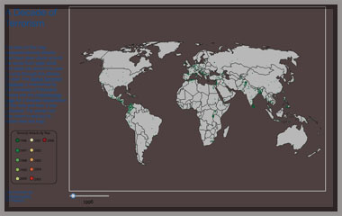
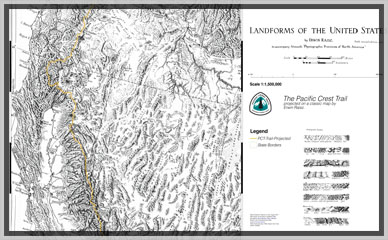
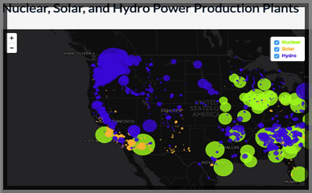

Francisco Lovko
Digital Cartography Portfolio

The map was Generated using QGIS and the uses Erwin Raisz Landforms of the United States Map as a basemap. The map is georeferenced to insure that the Erwin basemap plots geospacial data correctly from attribute tables being referenced by QGIS. Once the map is digitized new points, lines, and polygons can be added to the basemap. This kind of power allows the author to use classic maps as basemap for web based projects. The map displayed to left has been digitized to display the Pacific Crest Trail from Washington State to California.

The map was Generated using QGIS and the uses Erwin Raisz Landforms of the United States Map as a basemap. The map is georeferenced to insure that the Erwin basemap plots geospacial data correctly from attribute tables being referenced by QGIS. Once the map is digitized new points, lines, and polygons can be added to the basemap. This kind of power allows the author to use classic maps as basemap for web based projects. The map displayed to left has been digitized to display the Pacific Crest Trail from Washington State to California.

The map was built using CartoDB. It depicts the mass exodus of the Syrian refugees to neighboring countries. The countires have been color coded to show the percentage of the total registred refugees(September 2016) within each particular country. The purple circles are scaled proportionally to display the population of prominent Syrian Cities. When the viewer zooms into the map the purple circles will disappear and orange circle will appear. The orange cirlces display registered refugee sites in the region. The map does not take into account unregistered refugees within in the region or those who have made their way to Eastern or Western Europe. The map helps to depict the magnitude of the humanitarian crisis and the volume of the Syrian population that have been displaced by the ongoing conflict.

This map was built with custom JavaScript code drawing upon the Leaflet JavaScript Library to create a bivariate map. The map displays the location Nuclear(neon-green), Solar(orange) and Hydro(blue) power production plants. The The point data is displayed as proportional symbols based on the power output of each power plant. The viewer can filter the map in several ways. First, the reader can click on the map and it will only display power facilities located within 500 KM of the clicked area. Second, the viewer can filter the map by unchecking power sources in the layers control box. Additionally, by clicking on an individual point a popup window will display the name of the plant, its fuel source and the distance the plant is located in relation to the user's click on the map.